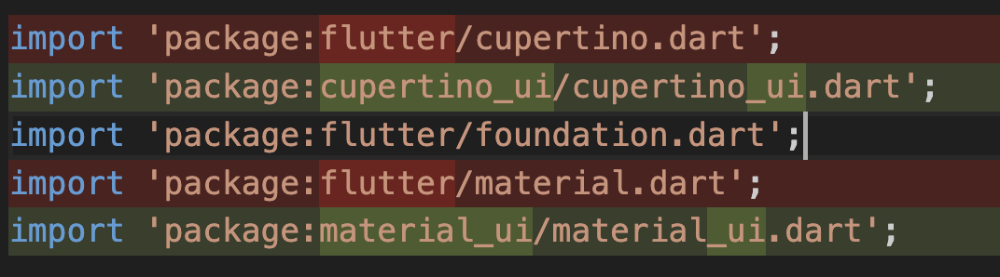

<div class="title" style="font-size: 55px; padding: 32px 16px">Migrate to <em>material_ui</em> (new in Flutter 3.50)</div>
<pre style="font-size: 30px"><span class="p">$</span> <span class="f">dart</span> <span class="s">fix</span> <span class="v">--apply</span> <span class="v">--code</span>=<span class="hl"><span class="s">migrate_design_widgets</span></span></pre>

<div class="callout">💡 It also updates your <code>flutter_localizations</code> delegates</div>
